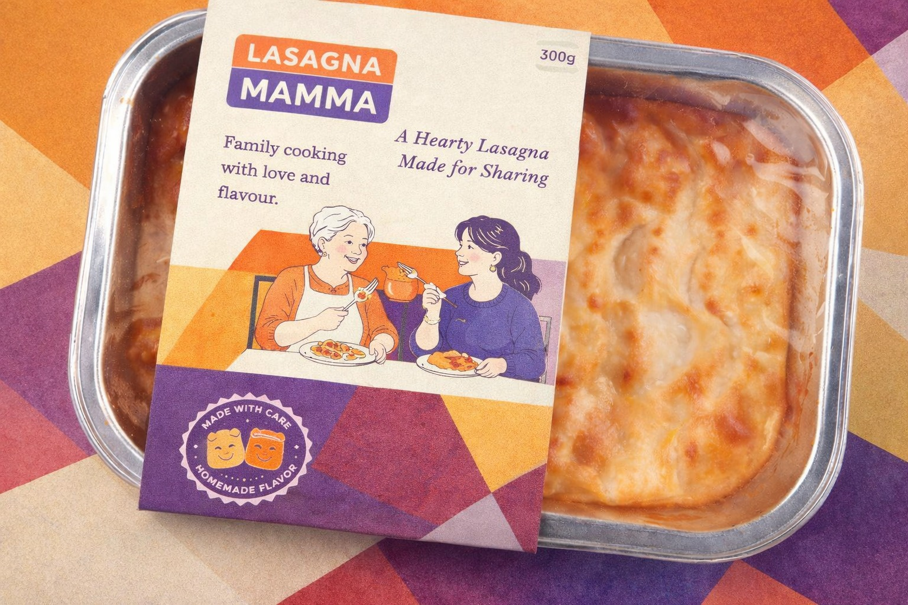

Genişletilmiş Marka Hikayesi
Hazır yemek ambalajlarında baskılı film yüzeylerindeki iletişim alanı sınırlıdır. Oysa tüketici; ürün içeriği, üretim süreci ve marka yaklaşımı hakkında daha fazla ve daha net bilgi görmek ister.
Sleeve çözümleri; geniş yüzeyi sayesinde okunabilirliği artırır, mesajları netleştirir. QR kodlar ve detaylı marka anlatımı için ek alan sunar.